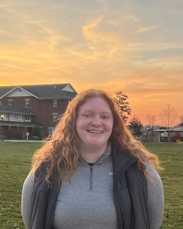

Sydney Artim's Portfolio for AENG 110 Class |
|
| Home Bookmark Print Project Digital Photos Project Infographic Project Video Project | |
|

Student at Millersville University |
My name is Sydney Artim, I am a freshman at Millersville University and am a part of the class of 2027. I decided on being an Applied Engineer with a concentration in Graphic and Packaging Technologies major because I enjoy designing things that are used every day by people all around the world. I am also interested in adding a minor in marketing throughout my college experience so that I am able to also experience the business side of my major. By adding this minor, I would be able to understand what happens to the products I design after I am done designing them. I am also a member of the Marauder Graphics Club, I wanted to join this club so I would have some hands-on experience that was a part of my major. I wanted to start as soon as possible so when I want to apply for internships, I already have some experience. Also, by joining the graphics club as soon as possible, I am able to see how the club is run and experience some of the administrative side as I eventually want to become president of the club. I want to become president of Graphics club because it would be a perfect blend of my current major and the minor, I plan on adding. When I graduate I would love to work in digital marketing for a professional sports team. |
| Home Bookmark Project Digital Photos Project Infographic Project Video Project | |
|
©2023 Sydney Artim | |